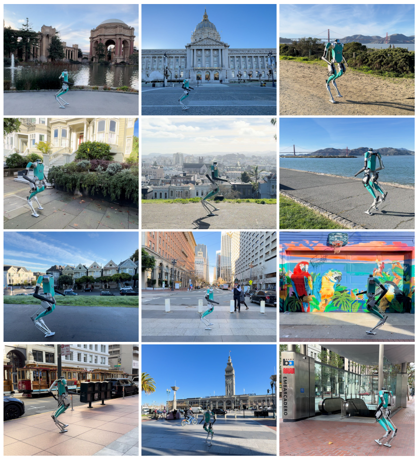
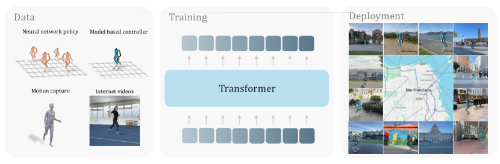
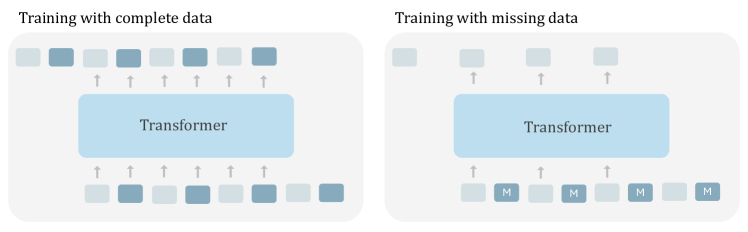
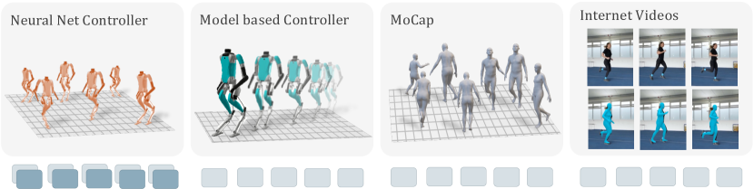
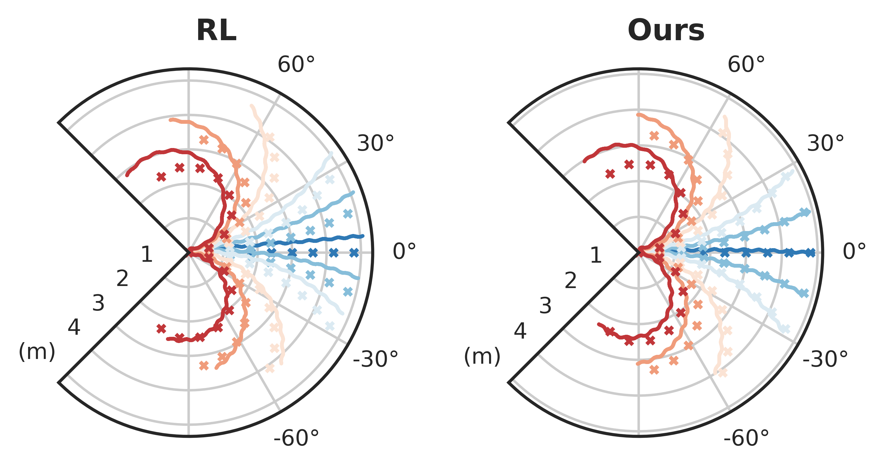
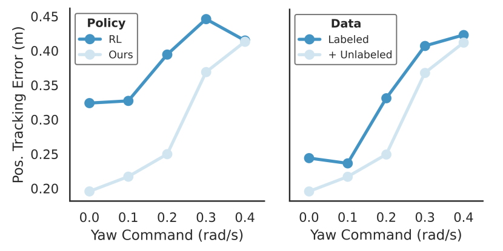
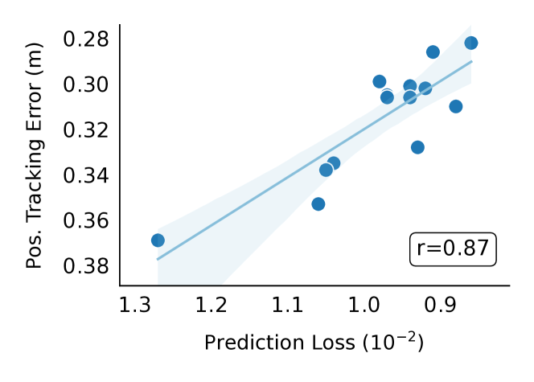
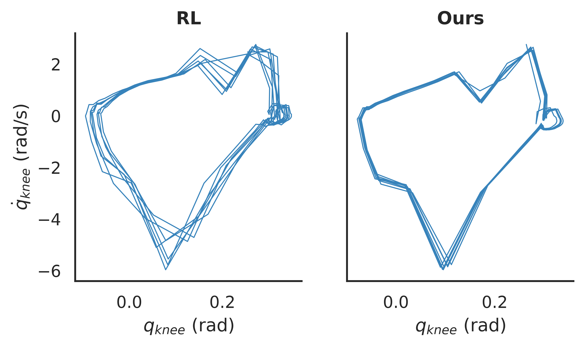
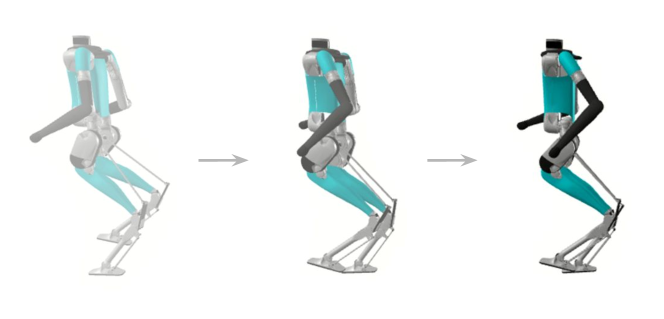
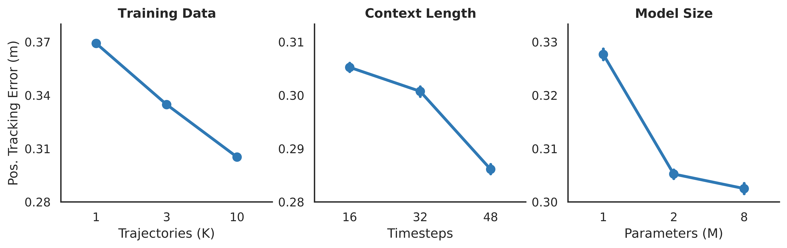

초록
본 논문에서는 실제 세계의 휴머노이드 제어를 언어에서 다음 단어를 예측하는 것과 유사한 '다음 토큰 예측(next token prediction)' 문제로 정의한다. 본 모델은 감각운동 궤적(sensorimotor trajectories)의 자기회귀적(autoregressive) 예측을 통해 학습된 인과적 트랜스포머(causal transformer)이다. 데이터의 다중 모달(multi-modal) 특성을 고려하기 위해, 모달리티가 정렬된 방식으로 예측을 수행하며, 각 입력 토큰에 대해 동일한 모달리티의 다음 토큰을 예측한다. 이러한 일반적인 정식화는 행동(action)이 없는 비디오 궤적과 같이 일부 모달리티가 누락된 데이터를 활용할 수 있게 해준다. 본 모델은 기존 신경망 정책, 모델 기반 제어기, 모션 캡처 데이터, 그리고 인간의 YouTube 비디오에서 수집된 시뮬레이션 궤적 데이터셋을 통해 학습된다. 본 모델을 통해 실제 크기의 휴머노이드 로봇이 샌프란시스코에서 제로샷(zero-shot)으로 보행할 수 있음을 보여준다. 본 모델은 단 27시간의 보행 데이터만으로 학습되었음에도 실제 세계로 전이될 수 있으며, 후진 보행과 같이 학습 중에 보지 못한 명령으로도 일반화될 수 있다. 이러한 발견은 감각운동 궤적의 생성형 모델링을 통해 도전적인 실제 세계의 제어 작업을 학습하는 유망한 경로를 제시한다.
1 서론
지난 10년간의 인공지능(AI) 분야는 인터넷의 다양한 데이터셋으로 학습된 대규모 신경망이 여러 환경에서 인상적인 결과를 낼 수 있음을 보여주었다. 이러한 AI 흐름의 핵심 동력은 인터넷의 방대한 언어 데이터를 생성형 모델링으로 학습한 대규모 트랜스포머 모델 (Vaswani et al., 2017)이었다 (Radford et al., 2018; Devlin et al., 2019; Radford et al., 2019, 2021; Brown et al., 2020b). 다음 단어를 예측함으로써, 이 모델들은 다운스트림 작업으로 전이되거나 (Radford et al., 2018), 다중 작업 학습을 수행하고 (Radford et al., 2019, 2021), 퓨샷(few-shot) 방식으로 학습할 수 있는 (Brown et al., 2020b) 풍부한 언어 표현을 습득한다.
이러한 모델링 기법이 언어에만 국한되는 것일까? 감각 및 운동 표현의 강력한 모델을 이와 유사한 방식으로 학습할 수 있을까? 실제로, 자기회귀 모델링 (Chen et al., 2020) 및 이와 관련된 마스크 모델링 접근법 (He et al., 2021)을 통해 고차원 시각 데이터의 우수한 표현을 학습할 수 있음이 확인되었다. 조작(manipulation) 분야에서 감각운동 표현을 학습하는 것에 대한 긍정적인 신호가 있었지만 (Radosavovic et al., 2023a), 이 영역은 여전히 대부분 미개척 상태로 남아 있다.
본 논문에서는 휴머노이드 제어를 대규모 감각운동 궤적 컬렉션의 데이터 모델링으로 정의한다. 언어에서와 마찬가지로, 우리는 시프트된 입력 시퀀스를 자기회귀적으로 예측하도록 일반적인 트랜스포머 모델을 학습시킨다. 언어와 달리 로봇 공학의 데이터 특성은 다르다. 고차원적이며 여러 입력 모달리티를 포함한다. 서로 다른 모달리티에는 관절 인코더나 관성 측정 장치(IMU)와 같은 센서뿐만 아니라 모터 명령도 포함된다. 이로부터 물리 세계의 문장으로 볼 수 있는 감각운동 궤적이 생성된다. 이러한 관점을 채택하면 로봇 공학 맥락에서 언어 모델링 프레임워크를 간단하게 적용할 수 있다. 입력 궤적을 토큰화하고 인과적 트랜스포머 모델을 학습시켜 시프트된 토큰을 예측한다. 중요한 점은 감각 및 운동 토큰을 모두 포함하는 전체 입력 시퀀스를 예측한다는 것이다. 즉, 조건부 행동 분포가 아니라 결합 데이터 분포를 모델링하는 것이다.
이것은 몇 가지 장점을 가진다. 첫째, 신경망이 더 많은 정보 비트를 예측하도록 학습시킴으로써 결과적으로 더 풍부한 세계 모델을 획득하게 한다. 둘째, 최적이지 않은 행동을 포함할 수 있는 노이즈가 있거나 불완전한 궤적을 활용할 수 있다. 셋째, 정보가 누락된 궤적로부터 학습할 수 있도록 프레임워크를 일반화할 수 있다.

우리의 핵심 관찰은 궤적이 불완전한 경우, 즉 일부 감각 또는 운동 정보가 누락된 경우에도, 존재하는 정보를 예측하고 누락된 토큰을 학습 가능한 마스크 토큰으로 대체함으로써 여전히 그 궤적으로부터 학습할 수 있다는 점이다. 직관적으로 모델이 정보가 없는 상황에서도 좋은 예측을 하도록 학습했다면, 물리 세계에 대한 더 나은 모델을 획득했을 것이다. 이러한 데이터의 매우 중요한 원천은 인터넷의 인간 비디오이다. 즉, 비디오에서 인간의 움직임은 관찰할 수 있지만 모터 명령이나 완전한 감각 입력에는 접근할 수 없다. 우리는 제안하는 방법이 이러한 데이터 소스로부터 효과적으로 학습할 수 있음을 입증한다.
제안하는 방법을 검증하기 위해, 이를 실제 세계의 도전적인 휴머노이드 보행 작업에 적용한다. 우리는 Agility Robotics에서 개발한 실제 크기의 Digit 휴머노이드 로봇을 사용한다. 먼저 시뮬레이션에서 감각운동 궤적 데이터셋을 수집한다. 여기에는 강화 학습으로 학습된 신경망 정책으로부터 얻은 완전한 궤적 (Radosavovic et al., 2023b)뿐만 아니라, 세 가지 다른 소스에서 얻은 불완전한 궤적이 포함된다: (i) 모델 예측 제어 기반의 Agility Robotics 제어기, (ii) 인간의 모션 캡처, (iii) 인간의 YouTube 비디오. 컴퓨터 비전 기술을 사용하여 인간 비디오를 재구성하고, 역운동학(inverse kinematics)을 통해 모션 캡처 및 YouTube 궤적을 모두 로봇에 맞게 리타게팅한다. 그런 다음 트랜스포머 모델을 학습시켜 궤적을 자기회귀적으로 예측하도록 한다. 테스트 시에는 행동을 자기회귀적으로 실행하고 감각 예측은 무시한다.
우리는 제안하는 정책이 실제 세계에 제로샷으로 배포되어 다양한 노면에서 보행할 수 있음을 보여준다. 구체적으로, 일주일 동안 샌프란시스코의 여러 장소에 모델을 배포하였다. 예시는 그림 1을 참조하고 비디오는 project page을 참조하길 바란다. 제안하는 접근법의 다양한 측면을 정량적으로 평가하기 위해 시뮬레이션에서 광범위한 연구를 수행한다. 오프라인 데이터만으로 학습된 자기회귀 정책이 테스트된 환경에서 강화 학습을 사용하는 최첨단 접근법 (Radosavovic et al., 2023b)과 대등한 성능을 보임을 확인하였다. 나아가 제안하는 접근법이 불완전한 궤적으로부터도 쉽게 이점을 얻을 수 있으며 우수한 스케일링 특성을 가지고 있음을 확인하였다.
이러한 발견은 대규모 감각운동 궤적 컬렉션의 생성형 모델링을 통해 도전적인 실제 세계의 로봇 제어 작업을 학습하는 유망한 경로를 제시한다.

2 관련 연구
생성형 모델링(Generative modeling). 데이터에 대한 연구는 섀넌(Shannon)의 기초 연구 (Shannon, 1951)부터 최근의 대규모 언어 모델 시대에 이르기까지 광범위하게 이루어졌다. 지난 10년 동안 다양한 모델이 등장했다. 대표적인 모델로는 픽셀 생성을 위한 GAN (Goodfellow et al., 2014) 및 확산 모델(Diffusion models) (Sohl-Dickstein et al., 2015; Ho et al., 2020), 언어 토큰 생성을 위한 LSTM (Hochreiter & Schmidhuber, 1997) 및 GPT (Radford et al., 2018)가 있다. 이러한 모델들은 다른 모달리티에도 채택되었다 (Oord et al., 2016; Engel et al., 2019; Wu et al., 2016). 이 중 자기회귀 트랜스포머 모델은 인상적인 스케일링 법칙 (Kaplan et al., 2020)과 인컨텍스트(in-context) 예시로부터 학습하는 능력 (Brown et al., 2020a) 덕분에 선두 주자가 되었다. 이러한 거동은 픽셀 (Chen et al., 2020), 언어-픽셀 (Ramesh et al., 2021), 언어-픽셀-오디오 (Kondratyuk et al., 2023)와 같은 다른 모달리티로도 확장되는 것으로 나타났다. 우리는 실제 세계의 휴머노이드 보행 맥락에서 자기회귀 생성 모델을 탐구한다.
로봇 공학에서의 트랜스포머(Transformers in robotics). 자연어 처리 (Radford et al., 2018; Devlin et al., 2019; Radford et al., 2019; Brown et al., 2020a) 및 컴퓨터 비전 (Dosovitskiy et al., 2020; He et al., 2021)에서 트랜스포머 모델 (Vaswani et al., 2017)의 성공에 이어, 지난 몇 년 동안 로봇 공학에서 트랜스포머 모델을 사용하는 것에 대한 관심이 증가해 왔다. 트랜스포머가 행동 복제(behavior cloning)에 효과적일 수 있음을 보여주는 여러 연구가 있었다. 예를 들어, (Shridhar et al., 2022)은 언어를 사용한 다중 작업 트랜스포머 정책을 학습하고, (Brohan et al., 2022)는 대규모 데이터로부터 언어 조건부 조작 정책을 학습한다. (Driess et al., 2023)는 체화된(embodied) 데이터로 언어 모델을 학습시킨다. 또한 트랜스포머 정책이 대규모 강화 학습에도 효과적일 수 있음이 확인되었다 (Radosavovic et al., 2023b). (Radosavovic et al., 2023a)은 마스크드 예측(masked prediction)을 통해 감각운동 표현을 학습한다. (Bousmalis et al., 2023)은 데모로부터 목표 조건부 정책을 학습한다. 이와 유사하게, 우리도 로봇 공학에 트랜스포머 모델을 사용하는 목표를 공유하지만, 실제 세계의 휴머노이드 보행을 위한 다양한 궤적의 자기회귀 모델링에 초점을 맞춘다.
휴머노이드 보행(Humanoid locomotion). 로봇이 걷는 능력을 마스터하는 것은 로봇 공학에서 오랫동안 지속된 과제였다. 지난 수십 년 동안 로봇 공학자들은 인간과 유사한 보행 기술을 탐구하기 위해 다양한 휴머노이드 로봇 (Kato, 1973; Hirai et al., 1998; Nelson et al., 2012; Stasse et al., 2017; Chignoli et al., 2021)을 제작해 왔다. 모델 기반 제어 접근법 (Raibert, 1986; Kajita et al., 2001)을 통해 안정적인 보행 거동이 달성되었으며, 최적화 기반 방법은 고도로 동적인 휴머노이드 모션을 가능하게 한다 (Kuindersma, 2020). 이러한 전략과 이를 학습과 결합하는 방식 (Castillo et al., 2021)을 통해 상당한 진전이 이루어졌지만, 광범위한 환경에 개선되고 적응할 수 있는 능력 덕분에 학습 기반 접근법이 주목을 받고 있다. 최근에는 시뮬레이션에서 대규모 강화 학습으로 학습된 순수 학습 기반 접근법이 실제 세계의 휴머노이드 보행을 가능하게 할 수 있음이 확인되었다 (Radosavovic et al., 2023b). 이전 연구와 마찬가지로 본 모델은 인과적 트랜스포머이다. 이전 연구와 달리, 우리는 강화 학습 대신 자기회귀 모델링을 수행한다.
3 접근법 (Approach)
본 섹션에서는 센서운동 궤적(sensorimotor trajectories) 의 데이터셋 이 주어졌다고 가정하고, 아래에서 우리의 접근법을 설명한다.
3.1 목적 함수 (Objective)
각 센서운동 궤적은 센서 관측값(sensory observations)과 행동(actions)의 시퀀스인 이다. 우리는 먼저 궤적을 K개의 토큰으로 토큰화하여 을 얻는다. 우리의 목표는 신경망을 학습시켜 밀도 함수 를 자기회귀(autoregressive) 방식으로 모델링하는 것이다:
| (1) |
우리는 궤적 데이터셋에 대한 음의 로그 우도(negative log-likelihood)를 최소화함으로써 모델을 학습시킨다:
| (2) |
우리는 일정한 분산을 가진 가우시안 분포를 가정하고, 예측된 토큰과 실제(ground truth) 토큰 사이의 평균 제곱 오차(mean squared error)를 최소화하도록 신경망을 학습시킨다:
| (3) |
원시 토큰 값을 회귀(regression)하는 대신, 각 차원을 빈(bin)으로 양자화하거나 벡터 양자화(vector quantization)를 수행할 수도 있다. 그러나 우리는 회귀 접근법이 실제 실험에서 상당히 잘 작동함을 발견하였으며, 단순성을 위해 이 방식을 채택한다.
3.2 결손된 모달리티 (Missing modalities)
지금까지의 논의에서는 각 궤적이 관측값과 행동의 시퀀스라고 가정했다. 다음으로, 행동이 없는 인간 비디오에서 추출된 궤적과 같이 모달리티가 결손된 시퀀스로 우리의 프레임워크를 어떻게 일반화할 수 있는지 보여준다. 행동이 없는 관측값의 궤적 이 주어졌다고 가정하자. 우리의 핵심 통찰은 행동이 없는 궤적을 행동이 마스킹된 일반 궤적처럼 취급할 수 있다는 것이다. 즉, 마스크 토큰 [M]을 삽입하여 을 얻을 수 있다. 이 궤적은 이제 우리의 일반 궤적과 동일한 형식을 가지므로 통일된 방식으로 처리될 수 있다. 입력의 마스킹된 부분에 해당하는 예측에 대해서는 손실(loss)을 무시한다. 이러한 원리는 행동에만 국한되지 않고 다른 어떤 모달리티에도 적용될 수 있다.
3.3 정렬된 예측 (Aligned prediction)
모달리티와 무관한(modality-agnostic) 방식으로 다음 토큰을 예측하는 대신, 우리는 모달리티에 정렬된(modality-aligned) 방식으로 예측을 수행한다. 즉, 각 입력 토큰에 대해 동일한 모달리티의 다음 토큰을 예측한다. 다이어그램은 그림 3을 참조하라.
3.4 공동 학습 (Joint training)
노이즈 수준이나 모달리티 하위 집합 측면에서 다양한 궤적을 포함하는 컬렉션에 대해 학습하는 데는 두 가지 옵션이 있다. 완전한 궤적과 불완전한 궤적을 모두 포함하여 모든 데이터를 한 번에 공동으로 학습(joint training)할 수 있다. 대안으로, 노이즈가 있고 불완전한 궤적에 대해 먼저 사전 학습(pre-training)을 진행할 수 있다. 이는 이후 완전한 궤적에 대해 학습할 때 좋은 초기화를 제공하는 것으로 볼 수 있다. 우리는 우리의 설정에서 두 접근법이 유사하게 작동함을 발견하였으며, 단순성을 위해 대부분의 실험에서 공동 학습을 채택한다.

3.5 모델 아키텍처 (Model architecture)
우리 모델은 바닐라 트랜스포머(vanilla transformer) (Vaswani et al., 2017)이다. 완전한 데이터 또는 불완전한 데이터로부터 궤적이 주어지면, 먼저 궤적을 토큰으로 토큰화한다. 우리는 각 모달리티에 대해 독립적인 선형 투영 레이어(linear projection layers)를 학습시키되, 시간 축에 대해서는 공유하도록 한다. 시간 정보를 인코딩하기 위해 위치 임베딩(positional embeddings)을 사용한다. 및 라고 가정하면 다음과 같다:
| (4) | ||||
| (5) |
여기서 은 결합된 관측 및 행동 모달리티를 차원 임베딩 벡터로 투영하기 위한 선형 투영 레이어이다. 위첨자 는 번째 레이어, 즉 입력 레이어에서의 임베딩을 나타낸다. 행동을 사용할 수 없는 경우, 를 대체하기 위해 마스크 토큰 를 사용하며, [M]은 무작위 벡터로 초기화되어 전체 모델과 함께 엔드투엔드(end-to-end)로 학습된다. 모델은 임베딩 벡터의 시퀀스 을 입력으로 받는다.
트랜스포머 아키텍처는 개의 레이어를 포함하며, 각 레이어는 멀티 헤드 셀프 어텐션(multi-head self-attention) 모듈과 MLP 모듈로 구성된다. 레이어 의 출력이 라고 가정하면, 레이어 의 출력은 다음과 같이 계산된다:
| (6) | ||||
| (7) | ||||
| (8) |
여기서 다중 헤드 자가 주의집중(multi-head self-attention)은 인과적 마스킹(causal masking)을 적용하여, 토큰이 자기 자신과 과거의 토큰들만 참조하도록 한다. 토큰이 모든 레이어를 거쳐 처리되면, 선형 투사 레이어 을 학습하여 임베딩을 예측된 상태와 행동으로 투사한다.
| (9) | ||||
| (10) | ||||
| (11) |
그 후 식 (3)의 목적 함수를 사용하여 트랜스포머를 학습시킨다. 토큰이 마스킹된 경우에는 손실을 적용하지 않는다. 그림 3에 나타난 바와 같이 두 가지 유형의 데이터 모두로 트랜스포머를 학습시킨다. 이를 통해 다양한 데이터 소스를 활용할 수 있으며, 결과적으로 데이터 측면에서의 확장(scaling)이 가능해진다.

3.6 모델 추론(Model inference)
추론 시점에 트랜스포머 모델은 항상 관측-행동 쌍에 접근할 수 있다. 이 설정에서 우리는 각 관측-행동 쌍 토큰에 대해 트랜스포머 모델을 자기회귀적(autoregressively)으로 적용한다. 과거의 관측과 행동을 조건으로 하여 다음 행동(또는 관측-행동 쌍)을 예측하고 그 행동을 실행한다. 그런 다음 로봇으로부터 관측값을 받아오고 예측된 관측값은 버린다. 실제 관측된 관측값과 예측된 행동을 다음 토큰 세트로 사용하고, 이를 과거의 쌍들과 결합하여 다음 관측-행동 쌍을 예측한다.
4 데이터셋(Dataset)
우리 접근법은 모델 학습을 위한 궤적 데이터셋 구축을 필요로 한다. 우리 데이터셋은 (i) 신경망 정책, (ii) 모델 기반 제어기, (iii) 인간 모션 캡처, (iv) 유튜브의 인간 영상 등 다양한 소스의 궤적을 포함한다. 다양한 데이터 소스에 대한 그림은 그림 4에 나와 있다. 다음으로 각각에 대해 차례대로 설명한다.
4.1 신경망 궤적
학습 궤적의 첫 번째 소스로, 대규모 강화 학습 (Radosavovic et al., 2023b)으로 학습된 신경망 정책을 사용한다. 구체적으로, 이 정책은 Isaac Gym (Makoviychuk et al., 2021)의 수천 개의 무작위 환경에서 수십억 개의 샘플로 학습되었다. 우리는 이 정책을 Agility Robotics의 시뮬레이터에서 실행하여 도메인 무작위화(domain randomization) 없이 평지에서 각각 10초 길이의 궤적 1만 개를 수집한다. 각 궤적은 다음과 같이 절단된 정규 분포(clipped normal distribution)에서 샘플링된 속도 명령을 조건으로 한다: 전방 선속도 m/s, 측방 선속도 m/s, 회전 각속도 rad/s.
데이터 생성 정책에 직접 접근할 수 있으므로, 완전한 관측값뿐만 아니라 모델이 예측한 정확한 행동도 기록할 수 있다. 우리는 이 데이터셋을 완전한 관측값과 정답(ground truth) 행동을 모두 갖춘 완전한 센서운동(sensorimotor) 궤적의 소스로 사용한다.
4.2 모델 기반 궤적
궤적의 두 번째 소스로, Agility Robotics에서 개발한 모델 기반 제어기를 사용한다. 이는 Digit 휴머노이드 로봇에 배포되어 있으며 Agility Robotics의 시뮬레이터에서도 사용할 수 있는 제어기이다. 우리는 평지 보행에 대해 각각 10초 길이의 궤적 1만 개로 구성된 두 개의 데이터 세트를 수집한다. 두 경우 모두 속도 명령은 다음과 같이 샘플링된다: 전방 선속도 m/s, 측방 선속도 m/s, 회전 각속도 rad/s. 한 세트에는 기본 모델 기반 설정을 사용하고, 다른 세트에는 다리 길이, 발 들어올리기 높이(step clearance), 바닥의 탄성(bounciness)을 무작위화한다.
이 제어기는 관절 토크를 출력하는데, 이는 우리의 관절 위치 행동 공간과 일치하지 않는다. 따라서 행동을 제외하고 관측값만 기록한다. 이 데이터는 동일한 형태(morphology)에서 얻은 상당히 양호한 관측값을 포함하지만 행동은 없는 궤적 소스의 역할을 한다.
4.3 인간 모션 캡처 궤적
다음 궤적 소스로, AMASS 저장소 (Mahmood et al., 2019)를 통해 배포되는 KIT 데이터셋 (Plappert et al., 2016)의 인간 모션 캡처(MoCap) 기록을 사용한다. 이 데이터는 실험실 환경에서 광학 마커 기반 추적을 사용하여 기록되었다. 데이터셋은 4천 개의 궤적으로 구성되어 있다. 우리는 서기, 걷기, 달리기 궤적 중 1천 개의 서브셋을 사용한다.
정답 행동을 포함하지 않는 것 외에도, 모션 캡처 궤적은 추가적인 과제를 안겨준다. 바로 서로 다른 형태(morphology)이다. 즉, 모션 캡처 궤적은 3D 공간에서 인간의 특징점(keypoint) 위치를 캡처한다. 이러한 궤적을 로봇 학습에 사용하기 위해, 우리는 역운동학(inverse kinematics) 문제를 풀어 이에 대응하는 로봇 포즈를 찾아낸다.
4.4 YouTube 동영상으로부터의 궤적
다양한 활동을 하는 사람들의 인터넷 동영상은 인간 보행을 학습하기 위한 잠재적으로 방대한 데이터 소스이다. 그러나 원시 픽셀에는 인간의 상태와 행동에 대한 정보가 없다. 이를 복원하기 위해, 먼저 컴퓨터 비전 추적 알고리즘인 PHALP (Rajasegaran et al., 2022)을 실행하여 3D 공간에서 인간의 궤적을 추출한다. 이를 통해 인간 신체의 3D 관절 SMPL (Loper et al., 2023) 매개변수 추정치와 월드 좌표계에서의 인간 관절에 대한 노이즈가 섞인 추정치를 얻는다. 우리는 이 인간 신체 관절 위치를 사용하여 앞서 설명한 역운동학(inverse kinematics) 최적화를 통해 모션을 휴머노이드 로봇에 리타겟팅(retargeting)한다. 인터넷 동영상에서 휴머노이드 궤적으로 모션을 리타겟팅한 후, 최적화 비용이 낮은 궤적들을 필터링한다. 이 데이터의 규모는 노이즈가 많다는 비용을 수반한다는 점에 유의해야 한다.

5 실험
우리는 휴머노이드 보행이라는 도전적인 작업에서 제안하는 접근법을 평가한다. 실제 하드웨어에서의 야외 실험과 시뮬레이션에서의 체계적인 평가를 수행한다.
5.1 실험 설정
로봇 플랫폼. Digit은 Agility Robotics에서 개발한 휴머노이드 로봇 플랫폼이다. 키 1.6m, 무게 45kg의 실물 크기 휴머노이드이다. 30개의 자유도를 가지며 그 중 20개가 구동된다. 높은 차원수와 4절 링크 구조로 인해 빠르게 최적화하기가 까다로우며, 이는 우리와 같은 궤적 수집본으로부터 효율적으로 학습할 수 있는 학습 기반 접근법에 특히 흥미로운 대상이 된다.
모델. 우리 모델은 차원의 은닉 크기(hidden size)를 가지며, 4개의 자가주의(self-attention) 레이어와 MLP 레이어로 구성된다. 각 자가주의는 4개의 헤드를 가진다. 각 주의 레이어 전에는 LayerNorm을 사용하고, MLP 레이어 뒤에는 ReLU 활성화 함수를 사용한다. 트랜스포머 모델 이전에 입력을 처리하기 위해 BatchNorm 레이어를 사용한다. 시간 에서 토큰을 예측할 때, 컨텍스트 길이를 적절한 크기로 유지하기 위해 입력에서 과거 16단계만 유지한다. 섹션 5.9에서 우리는 모델이 더 많은 매개변수와 더 긴 컨텍스트 길이로 확장되어 더 높은 성능을 달성할 수 있음을 보여준다.
5.2 실세계 배포
우리는 실세계에 정책을 배포한 결과를 보고하는 것으로 시작한다. 구체적으로, 일주일 동안 샌프란시스코의 다양한 위치에서 로봇을 배포하여 평가한다. 예시는 그림 1을, 동영상은 project page을 참조하라. 우리는 제안하는 정책이 보도, 콘크리트, 아스팔트, 타일 광장, 흙길을 포함한 다양한 노면에서 보행할 수 있음을 확인했다. 샌프란시스코와 같은 대도시 환경에서의 배포는 통제된 환경보다 훨씬 더 도전적이라는 점에 유의해야 한다. 도시 환경은 훨씬 더 혼잡하고, 여유가 없으며, 관대하지 않다. 이로 인해 오차 허용 한계가 낮아지며 일관되게 잘 작동하는 정책이 요구된다.

5.3 평가 지표
우리는 보행 정책을 두 가지 지표, 즉 추적 오차(tracking error)와 예측 오차(prediction error)로 평가한다. 추적 오차는 로봇이 특정 보행 명령을 얼마나 정확하게 따르는지 측정한다. 예측 오차는 별도의 검증 데이터 세트에서 측정된 다음 토큰 예측 손실이다. 다음과 같이 세부 사항과 함께 두 가지 지표를 소개하고, 두 지표가 보행 성능을 일관되게 예측할 수 있음을 보여준다.
추적 오차. 모든 실험에서 로봇은 시뮬레이션 환경의 정지 상태에서 시작하여, m/s에서 샘플링된 목표 전진 속도, rad/s에서 샘플링된 각속도, 그리고 0의 측면 속도로 구성된 일정한 자연 보행 명령을 받는다. 우리는 모든 시간 단계에서 속도 명령 을 완전히 만족하는 이상적인 로봇 기저부(base) 위치 궤적인 를 계산한다. 명령 추적의 정확도를 측정하기 위해, 위치 추적 오차를 로 정의한다. 평가를 위해 MuJoCo 시뮬레이터 (Todorov et al., 2012)를 사용하며, 모든 궤적은 10초 동안 지속된다.
예측 오차. 모델이 다음 토큰 예측으로 훈련되므로, 훈련 데이터와 분리되어 있고 RL 정책으로부터 수집된 상태-행동 궤적을 포함하는 검증 데이터 세트에서 예측 오차를 테스트한다. 이는 대규모 언어 모델(LLM)에 대한 언어 모델링 평가 (Hendrycks et al., 2020)와 유사하다. 우리는 상태 및 행동 예측 오차를 모두 테스트하고 이를 합산하여 최종 오차 지표로 사용한다.
5.4 최신 기술과의 비교
궤적 준수도. 우리는 제안하는 정책을 강화학습(RL) (Radosavovic et al., 2023b)으로 훈련된 신경망 제어기와 비교한다. 그림 5은 이러한 최신 베이스라인 대비 우리 제어기의 궤적 준수도를 시각적으로 비교하여 보여준다. 원점에 있는 로봇에서 시작하여, rad/s에서 선택된 11개의 서로 다른 요(yaw) 명령에 따른 로봇의 실제 궤적을 플롯한다. 각 정책에 대해 로봇 기저부가 그리는 목표 경로와 실제 경로를 함께 플롯한다. 우리 모델은 모든 회전 속도에서 RL 제어기보다 우수한 추적 성능을 보이며, 직선 보행의 경우 거의 완벽한 추적 성능을 보여준다.
정량적 평가. 그림 6의 왼쪽에서, 섹션 5.3에서 언급된 전진 및 요 속도의 전체 범위에 대해 RL 제어기 과의 위 비교를 반복한다. 명령된 요 각속도별로 그룹화하여 평균 위치 추적 오차를 플롯한다. 두 모델 모두 요 속도가 낮을 때 추적 오차가 더 낮지만, 우리 모델이 베이스라인 RL 정책을 일관되게 능가한다. 우리 모델이 바로 이 정책에 의해 생성된 궤적에 대한 다음 토큰 예측으로 훈련되었다는 점을 고려하면, 이는 흥미로운 결과이다.

5.5 예측 오차와 성능의 상관관계
서로 다른 학습 레시피, 모델 아키텍처, 데이터 크기 및 유형으로 학습된 14개의 모델을 수집하고, 각 모델에 대한 테스트 추적 오차와 예측 오차를 측정하였다. 모든 모델의 추적 및 예측 오차를 하나의 산점도로 나타내면 그림 7과 같다. 추적 오차와 예측 오차는 피어슨 상관계수 로 매우 높은 상관관계를 보이며, 이는 검증 세트에서 예측 오차가 낮은 모델이 서로 다른 명령을 더 높은 정확도로 추종할 가능성이 높음을 의미한다. 이는 예측 오차가 작업 성능을 예측할 수 있음을 시사한다.



5.6 보행 품질
휴머노이드 보행에서 로봇 보행의 부드러움은 구동되는 무릎 관절의 주기적인 기능에 좌우된다. 이를 측정하는 한 가지 방법은 시간에 따른 관절의 일반화된 위치와 속도를 매개변수 곡선으로 나타낸 위상 초상(phase portrait)이다. 이 플롯의 패턴은 관절이 수행하는 운동 유형에 대한 정보를 드러낼 수 있다. 예를 들어, 주기적인 패턴은 반복적인 운동을 나타낼 수 있는 반면, 불규칙한 패턴은 넘어짐과 같은 복잡하거나 다양한 운동을 시사할 수 있다. 그림 8에서 로봇에게 m/s로 전진 보행하도록 명령하고, 이와 관련된 왼쪽 무릎 관절의 위상 초상을 플롯하였다. 본 논문의 정책이 RL 정책의 전반적인 형태를 유지하면서도 이상 현상(aberration)이 더 적다는 점에 주목하자. 이는 본 논문의 정책에서 관찰되는 더 규칙적인 행동에 대한 정성적 평가를 뒷받침한다.
5.7 학습되지 않은 명령에 대한 일반화
본 논문의 정책은 행동 라벨이 지정된 학습 데이터에 포함되지 않았던 후진 보행과 같은 새로운 기술도 외삽(extrapolate)할 수 있음을 발견하였다. 그림 9에서 보여주듯이, 제어기에 음수 값의 전진 명령을 프롬프트로 입력하면 로봇이 넘어지지 않고 최대 0.5 m/s의 속도로 자연스럽게 후진 보행을 수행함을 확인할 수 있다.
5.8 행동이 없는 데이터로 학습
본 접근 방식의 장점 중 하나는 유튜브의 인간 비디오처럼 행동(action) 정보가 누락된 경우를 포함하여 다양한 출처의 궤적에 적용할 수 있다는 점이다. 그림 6의 오른쪽에서, 완전한 궤적만으로 학습한 경우와 완전한 궤적 및 불완전한 궤적을 모두 공동 학습(joint training)한 경우의 성능을 비교한다. 불완전한 궤적을 포함하는 것이 일관되게 더 나은 성능으로 이어진다는 것을 관찰할 수 있다. 이는 다양한 궤적의 대규모 수집본으로 본 접근 방식을 확장하는 데 있어 긍정적인 신호이다.
5.9 스케일링 연구
학습 데이터. 그림 10의 왼쪽에서, 학습 데이터셋의 크기를 늘림에 따른 모델 성능의 스케일링을 연구한다. 더 많은 궤적으로 학습할수록 위치 추적 오차가 감소함을 확인하였으며, 이는 더 큰 데이터셋으로 학습할 때 성능이 향상될 것이라는 긍정적인 신호이다.
컨텍스트 길이. 트랜스포머 정책의 컨텍스트 윈도우에 사용되는 토큰 수를 16, 32, 48단계로 변경하며 그 효과를 그림 10의 가운데에서 연구한다. 더 큰 컨텍스트 윈도우가 더 나은 정책을 생성하며, 이는 본 논문의 생성적 정책이 규모에 따라 향상되는 일종의 인컨텍스트 적응(in-context adaptation)을 수행함을 시사한다.
모델 크기. 임베딩 차원(144, 192, 384), 어텐션 헤드 수(3, 4, 12), 트랜스포머 블록 수(4, 4, 6)를 각각 다르게 하여 파라미터 수(1M, 2M, 8M)가 증가하는 모델들을 비교한다. 추적 오차는 모델 크기에 따라 단조 감소한다.
| Track Err. | Pred. Err. | |
|---|---|---|
| Concat | 0.310 | 0.88 |
| Separate | 0.299 | 0.98 |
| Track Err. | Pred. Err. | |
|---|---|---|
| Align | 0.299 | 0.98 |
| Non-align | 0.338 | 1.05 |
| Track Err. | Pred. Err. | |
|---|---|---|
| Joint training | 0.310 | 0.88 |
| Staged training | 0.311 | - |
| Track Err. | Pred. Err. | |
|---|---|---|
| State-action | 0.305 | 0.97 |
| Action-only | 0.335 | - |
5.10 소거 연구 (Ablation studies)
연결된 토큰 vs. 분리된 토큰. 트랜스포머의 입력을 위해, 각 단계의 관측과 행동을 하나의 토큰으로 연결(concatenate)하거나, 두 개의 분리된 토큰으로 임베딩할 수 있다. 표 1(a)에서 이 두 가지 선택지를 비교한다. 연결하는 방식이 더 낮은 예측 오차를 보이는 반면, 토큰을 분리하는 방식은 더 낮은 추적 오차를 보임을 알 수 있다. 전반적으로 이 둘은 대등한 성능을 보이지만, 분리된 토큰을 사용하면 입력 길이가 두 배로 늘어나고 계산 오버헤드가 발생한다.
모달리티 정렬 예측 vs. 비정렬 예측. 관측과 행동에 대해 분리된 토큰을 입력으로 사용할 때, 로부터 을 예측하고 으로부터 를 예측하여 예측과 입력 간의 모달리티를 정렬할 수도 있고, 로부터 를 예측하고 로부터 을 예측하여 정렬을 하지 않을 수도 있다. 표 1(b)을 보면, 모달리티 정렬을 하는 것이 정렬을 하지 않는 것보다 명확히 더 나은 성능을 보임을 알 수 있다. 이는 추론 중 번째 단계에서 번째 단계의 행동을 예측할 때, 정렬이 없으면 먼저 을 예측하고 이 예측값을 입력으로 사용하여 를 예측해야 하기 때문으로 추정된다. 만약 예측된 이 실제 (학습 중 를 예측하는 데 사용됨)에 비해 정확하지 않다면, 테스트 데이터와 학습 데이터 간의 불일치가 발생하여 행동 예측에 오차를 유발하게 된다.
공동 학습 vs. 단계적 학습. 행동이 포함된 완전한 데이터와 행동이 없는 불완전한 데이터가 모두 주어졌을 때, 섹션 3에서 설명한 대로 두 데이터 모두에 대해 공동으로 학습할 수도 있고, 먼저 상태 예측만으로 모든 데이터에 대해 모델을 사전 학습한 다음, 행동 예측이 포함된 완전한 데이터로 모델을 미세 조정할 수도 있다. 표 1(c)에서 이 두 가지 접근법을 비교한다. 이 둘 사이에 유의미한 차이가 관찰되지 않았으며, 이는 상태 예측에 대한 사전 학습 후 행동 예측에 대한 미세 조정을 수행하는 방식 또한 합리적인 보행 정책을 제공함을 나타낸다.
상태-행동 예측 vs. 행동 전용 예측. 행동만 예측하도록 학습된 정책과 상태와 행동을 모두 예측하도록 학습된 정책의 성능을 비교한다. 표 1(d)의 결과는 상태-행동 예측이 궤적 추적에 대한 모델 성능을 향상시킴을 보여준다. 우리는 이러한 추가적인 학습 신호가 모델로 하여금 보행 작업에 유익한 세상에 대한 더 풍부한 표현(representation)을 학습할 수 있게 한다고 가설을 세운다.
6 논의 (Discussion)
본 논문에서는 실제 환경의 휴머노이드 보행을 위한 자기지도 학습(self-supervised) 접근법을 제시한다. 우리 모델은 기존의 신경망 정책, 모델 기반 제어기, 인간 모션 캡처, 그리고 유튜브의 인간 영상에서 수집한 센서모터 궤적 데이터셋을 통해 학습된다. 우리는 이 모델을 통해 실제 크기의 휴머노이드가 실제 환경에서 제로샷(zero-shot)으로 보행할 수 있음을 보여준다. 이러한 발견은 대규모 궤적 데이터셋의 생성형 모델링(generative modeling)을 통해 도전적인 실제 로봇 제어 작업을 학습하는 유망한 경로를 제시한다.
감사의 글 (Acknowledgements)
본 연구는 DARPA Machine Common Sense 프로그램, ONR MURI 프로그램 (N00014-21-1-2801), NVIDIA, Hong Kong Centre for Logistics Robotics, The AI Institute, 그리고 BAIR의 산업 연합 프로그램의 지원을 일부 받아 수행되었습니다. 역운동학(inverse kinematics) 시뮬레이션 실험을 도와준 Saner Cakir와 Vikas Ummadisetty에게 감사를 표합니다.
References
- Bousmalis et al. (2023) Bousmalis, K., Vezzani, G., Rao, D., Devin, C., Lee, A. X., Bauza, M., Davchev, T., Zhou, Y., Gupta, A., Raju, A., et al. Robocat: A self-improving foundation agent for robotic manipulation. arXiv:2306.11706, 2023.
- Brohan et al. (2022) Brohan, A., Brown, N., Carbajal, J., Chebotar, Y., Dabis, J., Finn, C., Gopalakrishnan, K., Hausman, K., Herzog, A., Hsu, J., et al. Rt-1: Robotics transformer for real-world control at scale. arXiv:2212.06817, 2022.
- Brown et al. (2020a) Brown, T., Mann, B., Ryder, N., Subbiah, M., Kaplan, J. D., Dhariwal, P., Neelakantan, A., Shyam, P., Sastry, G., Askell, A., et al. Language models are few-shot learners. In NeurIPS, 2020a.
- Brown et al. (2020b) Brown, T. B., Mann, B., Ryder, N., Subbiah, M., Kaplan, J., Dhariwal, P., Neelakantan, A., Shyam, P., Sastry, G., Askell, A., et al. Language models are few-shot learners. NeurIPS, 2020b.
- Castillo et al. (2021) Castillo, G. A., Weng, B., Zhang, W., and Hereid, A. Robust feedback motion policy design using reinforcement learning on a 3d digit bipedal robot. In IROS, 2021.
- Chen et al. (2020) Chen, M., Radford, A., Child, R., Wu, J., Jun, H., Luan, D., and Sutskever, I. Generative pretraining from pixels. In ICML, 2020.
- Chignoli et al. (2021) Chignoli, M., Kim, D., Stanger-Jones, E., and Kim, S. The mit humanoid robot: Design, motion planning, and control for acrobatic behaviors. In Humanoids, 2021.
- Devlin et al. (2019) Devlin, J., Chang, M.-W., Lee, K., and Toutanova, K. Bert: Pre-training of deep bidirectional transformers for language understanding. In NAACL-HCT, 2019.
- Dosovitskiy et al. (2020) Dosovitskiy, A., Beyer, L., Kolesnikov, A., Weissenborn, D., Zhai, X., Unterthiner, T., Dehghani, M., Minderer, M., Heigold, G., Gelly, S., et al. An image is worth 16x16 words: Transformers for image recognition at scale. In ICLR, 2020.
- Driess et al. (2023) Driess, D., Xia, F., Sajjadi, M. S., Lynch, C., Chowdhery, A., Ichter, B., Wahid, A., Tompson, J., Vuong, Q., Yu, T., et al. Palm-e: An embodied multimodal language model. arXiv:2303.03378, 2023.
- Engel et al. (2019) Engel, J., Agrawal, K. K., Chen, S., Gulrajani, I., Donahue, C., and Roberts, A. Gansynth: Adversarial neural audio synthesis. arXiv:1902.08710, 2019.
- Goodfellow et al. (2014) Goodfellow, I., Pouget-Abadie, J., Mirza, M., Xu, B., Warde-Farley, D., Ozair, S., Courville, A., and Bengio, Y. Generative adversarial nets. In NeurIPS, 2014.
- He et al. (2021) He, K., Chen, X., Xie, S., Li, Y., Dollár, P., and Girshick, R. Masked autoencoders are scalable vision learners. arXiv:2111.06377, 2021.
- Hendrycks et al. (2020) Hendrycks, D., Burns, C., Basart, S., Zou, A., Mazeika, M., Song, D., and Steinhardt, J. Measuring massive multitask language understanding. arXiv preprint arXiv:2009.03300, 2020.
- Hirai et al. (1998) Hirai, K., Hirose, M., Haikawa, Y., and Takenaka, T. The development of honda humanoid robot. In ICRA, 1998.
- Ho et al. (2020) Ho, J., Jain, A., and Abbeel, P. Denoising diffusion probabilistic models. In NeurIPS, 2020.
- Hochreiter & Schmidhuber (1997) Hochreiter, S. and Schmidhuber, J. Long short-term memory. Neural computation, 1997.
- Kajita et al. (2001) Kajita, S., Kanehiro, F., Kaneko, K., Yokoi, K., and Hirukawa, H. The 3d linear inverted pendulum mode: A simple modeling for a biped walking pattern generation. In IROS, 2001.
- Kaplan et al. (2020) Kaplan, J., McCandlish, S., Henighan, T., Brown, T. B., Chess, B., Child, R., Gray, S., Radford, A., Wu, J., and Amodei, D. Scaling laws for neural language models. arXiv:2001.08361, 2020.
- Kato (1973) Kato, I. Development of wabot 1. Biomechanism, 1973.
- Kondratyuk et al. (2023) Kondratyuk, D., Yu, L., Gu, X., Lezama, J., Huang, J., Hornung, R., Adam, H., Akbari, H., Alon, Y., Birodkar, V., et al. Videopoet: A large language model for zero-shot video generation. arXiv:2312.14125, 2023.
- Kuindersma (2020) Kuindersma, S. Recent progress on atlas, the world’s most dynamic humanoid robot, 2020. URL https://youtu.be/EGABAx52GKI.
- Loper et al. (2023) Loper, M., Mahmood, N., Romero, J., Pons-Moll, G., and Black, M. J. Smpl: A skinned multi-person linear model. In Seminal Graphics Papers: Pushing the Boundaries, Volume 2, 2023.
- Mahmood et al. (2019) Mahmood, N., Ghorbani, N., Troje, N. F., Pons-Moll, G., and Black, M. J. AMASS: Archive of motion capture as surface shapes. In ICCV, 2019.
- Makoviychuk et al. (2021) Makoviychuk, V., Wawrzyniak, L., Guo, Y., Lu, M., Storey, K., Macklin, M., Hoeller, D., Rudin, N., Allshire, A., Handa, A., et al. Isaac gym: High performance gpu-based physics simulation for robot learning. In NeurIPS, 2021.
- Nelson et al. (2012) Nelson, G., Saunders, A., Neville, N., Swilling, B., Bondaryk, J., Billings, D., Lee, C., Playter, R., and Raibert, M. Petman: A humanoid robot for testing chemical protective clothing. Journal of the Robotics Society of Japan, 2012.
- Oord et al. (2016) Oord, A. v. d., Dieleman, S., Zen, H., Simonyan, K., Vinyals, O., Graves, A., Kalchbrenner, N., Senior, A., and Kavukcuoglu, K. Wavenet: A generative model for raw audio. arXiv:1609.03499, 2016.
- Plappert et al. (2016) Plappert, M., Mandery, C., and Asfour, T. The KIT motion-language dataset. Big Data, 2016.
- Radford et al. (2018) Radford, A., Narasimhan, K., Salimans, T., and Sutskever, I. Improving language understanding by generative pre-training. 2018.
- Radford et al. (2019) Radford, A., Wu, J., Child, R., Luan, D., Amodei, D., Sutskever, I., et al. Language models are unsupervised multitask learners. 2019.
- Radford et al. (2021) Radford, A., Kim, J. W., Hallacy, C., Ramesh, A., Goh, G., Agarwal, S., Sastry, G., Askell, A., Mishkin, P., Clark, J., et al. Learning transferable visual models from natural language supervision. In ICML, 2021.
- Radosavovic et al. (2023a) Radosavovic, I., Shi, B., Fu, L., Goldberg, K., Darrell, T., and Malik, J. Robot learning with sensorimotor pre-training. In CoRL, 2023a.
- Radosavovic et al. (2023b) Radosavovic, I., Xiao, T., Zhang, B., Darrell, T., Malik, J., and Sreenath, K. Real-world humanoid locomotion with reinforcement learning. arXiv:2303.03381, 2023b.
- Raibert (1986) Raibert, M. H. Legged robots that balance. MIT press, 1986.
- Rajasegaran et al. (2022) Rajasegaran, J., Pavlakos, G., Kanazawa, A., and Malik, J. Tracking people by predicting 3d appearance, location and pose. In Proceedings of the IEEE/CVF Conference on Computer Vision and Pattern Recognition, pp. 2740–2749, 2022.
- Ramesh et al. (2021) Ramesh, A., Pavlov, M., Goh, G., Gray, S., Voss, C., Radford, A., Chen, M., and Sutskever, I. Zero-shot text-to-image generation. In ICML, 2021.
- Shannon (1951) Shannon, C. E. Prediction and entropy of printed english. Bell system technical journal, 1951.
- Shridhar et al. (2022) Shridhar, M., Manuelli, L., and Fox, D. Perceiver-actor: A multi-task transformer for robotic manipulation. In CoRL, 2022.
- Sohl-Dickstein et al. (2015) Sohl-Dickstein, J., Weiss, E., Maheswaranathan, N., and Ganguli, S. Deep unsupervised learning using nonequilibrium thermodynamics. In ICML, 2015.
- Stasse et al. (2017) Stasse, O., Flayols, T., Budhiraja, R., Giraud-Esclasse, K., Carpentier, J., Mirabel, J., Del Prete, A., Souères, P., Mansard, N., Lamiraux, F., et al. Talos: A new humanoid research platform targeted for industrial applications. In Humanoids, 2017.
- Todorov et al. (2012) Todorov, E., Erez, T., and Tassa, Y. Mujoco: A physics engine for model-based control. In IROS, 2012.
- Vaswani et al. (2017) Vaswani, A., Shazeer, N., Parmar, N., Uszkoreit, J., Jones, L., Gomez, A. N., Kaiser, Ł., and Polosukhin, I. Attention is all you need. In NeurIPS, 2017.
- Wu et al. (2016) Wu, J., Zhang, C., Xue, T., Freeman, B., and Tenenbaum, J. Learning a probabilistic latent space of object shapes via 3d generative-adversarial modeling. In NeurIPS, 2016.